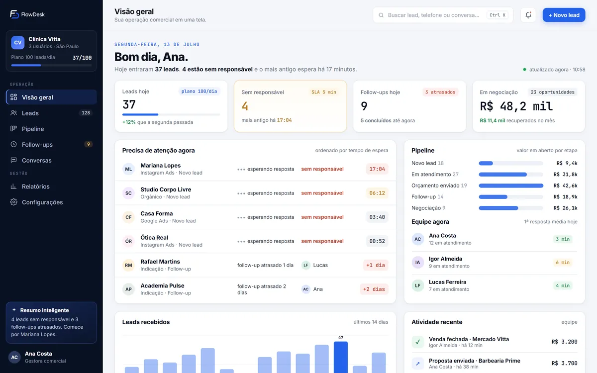
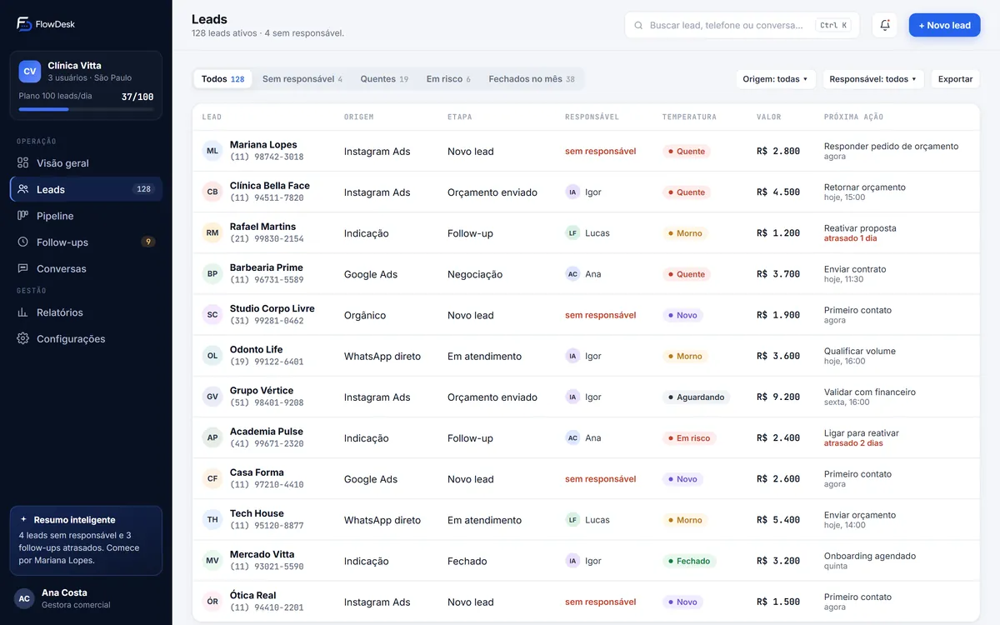
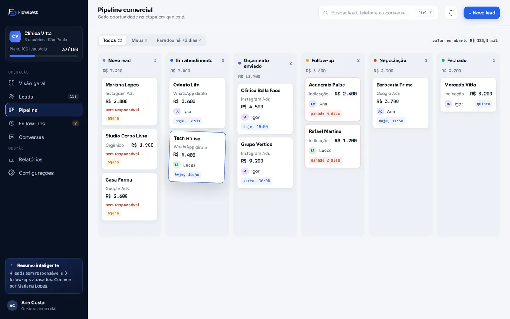
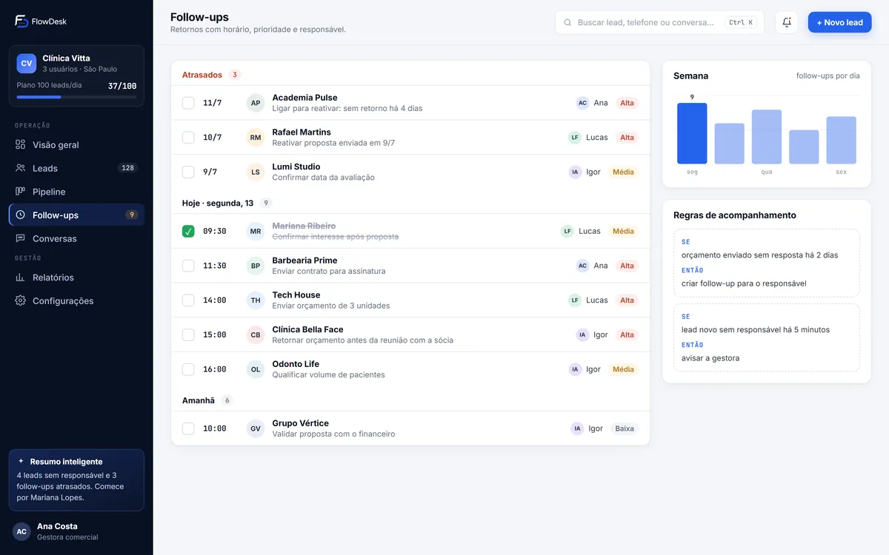
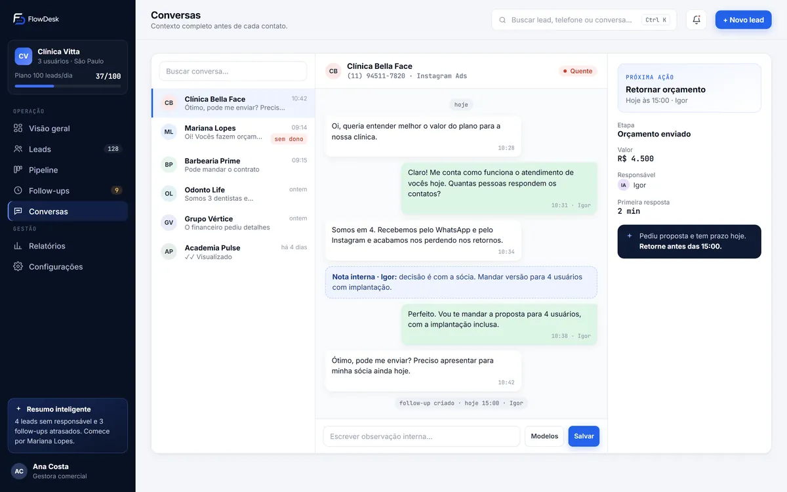
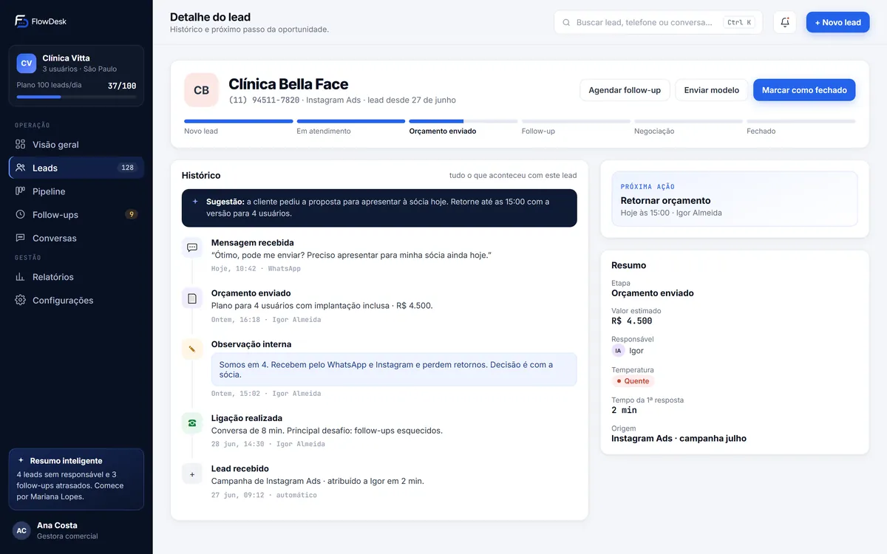
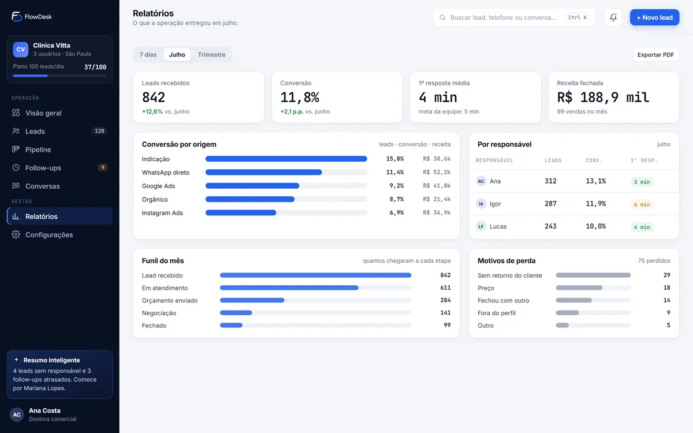

ML
Mariana LopesInstagram Ads · 09:14
lead novoO contato chega e vira um lead
Cada conversa entra na FlowDesk com origem, valor estimado e temperatura. Nada fica só no celular de quem leu primeiro.
CRM com implantação para quem vende pelo WhatsApp
O pedido de orçamento chega, alguém lê e a conversa desce na lista. A FlowDesk transforma essa caixa de entrada em uma operação comercial: quem responde, o que vence às 15:00 e quanto está em negociação.
Uma conversa pelo WhatsApp com a nossa equipe. A implantação é feita por nós antes do seu primeiro acesso.
representação da FlowDesk · dados ilustrativos
O problema
Hoje o pedido chega no WhatsApp da empresa, alguém lê, e a conversa desce na lista conforme as próximas chegam. Ninguém faz nada de errado. A venda escapa mesmo assim.
Mariana pediu orçamento. O marketing fez a parte dele.
Duas pessoas leram. Cada uma achou que a outra ia responder.
“Vou ver e te falo.” Ninguém anota quando falar de novo.
Ela fechou com quem respondeu primeiro.
Esse relógio conta de verdade desde que você abriu a página.
Como funciona
Cada conversa entra na FlowDesk com origem, valor estimado e temperatura. Nada fica só no celular de quem leu primeiro.
Todo lead tem um responsável e um prazo de primeira resposta. Quem está esperando aparece no topo, e o relógio só para quando alguém responde.
Toda proposta enviada ganha um retorno agendado. Se o cliente some, uma regra cria o follow-up e avisa o responsável.
Recursos
Sua equipe continua atendendo no WhatsApp de sempre. A FlowDesk cuida do que fica em volta: quem, quando, quanto e o que vem depois.
Origem, temperatura, valor estimado e próxima ação de cada contato. Filtros mostram na hora quem está sem dono ou em risco.
Cada oportunidade na etapa em que está, com valor somado por coluna. Você arrasta o cartão quando a negociação avança.
Retornos com horário, prioridade e responsável. Atrasados aparecem no topo; concluídos saem da frente.
Tudo o que já aconteceu com o cliente, com as observações internas da equipe. Quem assume já sabe o que foi combinado.
Gatilhos simples que cobram o retorno antes que o cliente precise cobrar. Você define o prazo, a FlowDesk lembra.
Conversão por origem, tempo de primeira resposta por pessoa, funil do mês e motivos de perda. Para decidir com dado, não com impressão.







Implantação
A maioria dos CRMs entrega um sistema vazio. A FlowDesk entrega o seu processo comercial montado, com a sua equipe, as suas etapas e as suas mensagens.
Entendemos como os contatos chegam hoje, o volume e quem atende.
Quando faz sentido, uma reunião curta para mapear etapas e gargalos.
O plano certo para o seu volume e o link de pagamento.
Montamos o ambiente com base no levantamento ao lado.
Login para cada pessoa da equipe e suporte no início do uso.
Planos por volume
Todos incluem a implantação. O valor vem na proposta, depois de entendermos a sua operação.
Operações em estruturação
Para equipes que estão organizando o processo comercial e precisam de controle desde o início.
Mais procurado
Operações em crescimento
Para empresas com fluxo constante de contatos e acompanhamento mais rigoroso.
Operações de alto volume
Para operações com vários responsáveis, regras específicas e necessidade de escala.
Também montamos faixas intermediárias conforme o volume e a estrutura da sua empresa.
Não. A sua equipe continua atendendo pelo WhatsApp de sempre, com o mesmo número. A FlowDesk organiza o processo em volta das conversas: quem é o responsável, em que etapa o cliente está, qual é o próximo passo e quando ele vence.
É um CRM entregue com a implantação feita. Antes do primeiro acesso, a nossa equipe configura as etapas, os usuários, os modelos de mensagem e as notificações com base no levantamento da sua operação.
A equipe já recebe o ambiente montado com as etapas e mensagens que vocês usam. Depois da liberação do acesso, acompanhamos o início do uso para garantir que cada pessoa consiga trabalhar no dia a dia.
Depois da confirmação do pagamento, configuramos o ambiente com as informações que você enviar. O acesso é feito por e-mail e senha para cada usuário autorizado.
O valor depende do volume diário de leads e da complexidade da implantação. Você recebe a proposta depois do diagnóstico, com tudo explícito antes de pagar.
A FlowDesk é desenvolvida e comercializada pela CONECTA DIGITAL NEGÓCIOS, CNPJ 59.118.161/0001-27.
Diagnóstico gratuito
No diagnóstico, olhamos como os contatos chegam na sua empresa e mostramos onde as vendas estão parando. É uma conversa pelo WhatsApp, sem compromisso.
ou chame direto: (11) 97716-0644